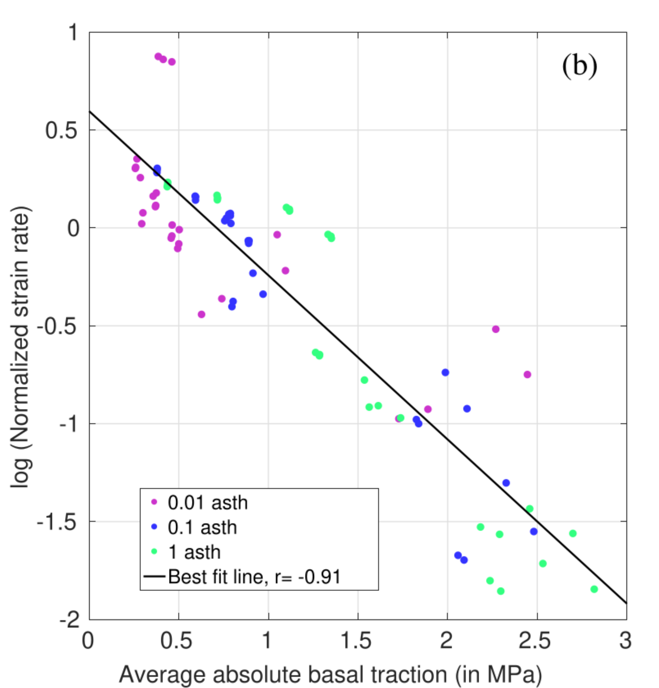

Research Collaborations
Craton Dynamics



Understanding the stability of cratons within tectonically active planet like Earth stands as one of the grand challenges in geodynamics. Through the development of
numerical models of craton
evolution, my research aims to shed light on why certain cratons have remained stable for over 3 billion years, while others, such as the North China Craton,
have undergone complete destruction.
My findings suggest that the combined effects of viscosity and thickness play a crucial role in enhancing the strength of cratons, thereby shielding
them from tectonic recycling. Two key theoretical insights:
1. Stress and strain-rates exhibit an inverse relationship at the base of the lithosphere , leading to decreased deformation beneath thick cratons.
2. The thickness and viscosity of cratons induce a convective self-compression , further enhancing
their resistance against disintegrating forces.
My research also indicates that cratons require a minimum viscosity of 1023 Pa.s and that the surrounding asthenosphere
should not have a viscosity lower than 1020 Pa.s to support their long-term stability.
However, cratons face potential thinning or complete destruction under certain circumstances. Thermal weakening induced by mantle plumes, as observed
in the case of the North China Craton, could render a craton vulnerable to Rayleigh-Taylor instability and consequent destruction.